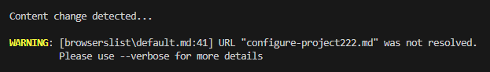

Why Retype?
Comparison with GitHub readme files
While GitHub README.md files are great, there are several compelling reasons to consider using a documentation platform like Retype:
-
Better Structuring: Retype simplifies the organization of documentation by allowing easy division into multiple files and provides an intuitive navigation system with a left sidebar for seamless browsing.
-
Automatic Table of Contents: Retype generates an in-page Table of Contents automatically from the page's headers, improving navigation within the documentation.
-
Powerful Search: Retype integrates advanced content search functionality, enabling developers to quickly locate the information they need.
-
Broken Link Detection: Retype's compilers swiftly identify any broken links (including anchors), ensuring that your documentation remains error-free.

-
Advanced Code Block Features: Retype's code blocks support features like line highlighting and optional titles, enhancing the presentation of code samples.
-
Rich components collection: Retype offers out of the box a rich collection of markdown components that should meet the requirements of most documentation websites.
-
Outbound Links: Retype automatically identifies and manages external (outbound) links within the project, opening them in new tabs when clicked for a smoother user experience.
-
Multiple Layouts: Retype offers three distinct layouts out of the box:
page,central, andblog, allowing flexibility in presentation. -
Custom CSS: Retype allows to add custom global CSS and CSS classes to containers.
-
The Hub Functionality: Retype's hub functionality enables the interlinking of multiple websites, facilitating seamless navigation between related resources.
By choosing Retype, we can take advantage of these features to enhance our documentation's organization, accessibility, and overall developers experience.
Comparison with other documentation platforms
When considering documentation platforms, it's essential to explore alternatives to Retype. Several options exist, including SaaS-based solutions like Gitbook and self-hosted options like Docusaurus, Rspress, or even creating a custom website using Next.js.
SaaS-based platforms
SaaS-based platforms like Gitbook offer convenience but can fall short in terms of customization and often come with complex pricing structures, particularly when managing a collection of libraries like Workleap's IDP.
Self-hosted platforms
Self-hosted platforms like Docusaurus can match Retype's feature set but tend to have a higher entry barrier. Each website created with Docusaurus is entirely custom and involves frontend tooling. The entry barrier increases significantly because developers must possess knowledge of how frontend tools operate and how to build a React application.
One of Retype's strengths lies in its balance between customization and ease of entry. It provides just enough customization to create rich and personalized documentation while maintaining a very low entry barrier. Basic knowledge of markdown is all that's needed to get started.
High-level solution structure of a Docusaurus website:
root
├── docs
├──── Folder-1
├─────── page1.md
├── src
├──── components
├─────── Tab.tsx
├─────── HomePageItem.tsx
├──── css
├──── pages
├─────── index.tsx
├─────── Home.tsx
├──── static
├── .gitignore
├── babel.config.js
├── docusaurus.config.js
├── sidebars.js
├── tsconfig.ts
├── package.jsonHigh-level solution structure of a Retype website:
root
├── docs
├──── Folder-1
├─────── page1.md
├── retype.yml
├── package.jsonIn summary, platforms like Docusaurus demand frontend expertise to write documentation effectively, while Retype only requires a basic understanding of markdown. Retype functions as a command-line interface (CLI) that compiles markdown files into a website, making it adaptable even within a .NET repository since it supports the .NET platform.
.NET support
Retype fully supports the .NET platform, making it a seamless choice for .NET developers:
dotnet tool install retypeapp --global
retype startWith Retype's .NET support, creating documentation for an IDP backend library becomes straightforward. All you need to do is include a docs folder at the root of your repository, and Retype will handle the rest:
wl-domain-event-propagation
├── docs
├──── getting-started.md
├──── guides
├─────── building-releasing-versioning.md
├── src
├── retype.yml